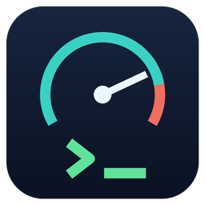

TurboSSHSSH, serial, SFTP and a remote camera for people who live on embedded and automotive boxes. One toolkit — a Python library, a CLI, and a desktop GUI with a real VT100 terminal.
Everything below is available three ways — from the Python library, the command line, and the desktop app.
Connect directly, through an RDP/Windows jump box, or to old ECUs that only speak deprecated crypto. Typed results — exit code, stdout, timing.
slog2info -w, journalctl -f, dmesg -w
streamed line by line, with regex matching, stop-on-match and tee-to-file.
A full remote-filesystem API and a graphical browser under every session. Transfers run on their own channel, so nothing blocks.
Open a COM port plugged into the remote Windows box and type into it like a real terminal — Tab-completion, Ctrl-C, the lot.
View a webcam on this PC or on a remote machine, with snapshot, record, pause and rotate. Sharp native MJPEG over a clean SSH tunnel.
Ask the machine you're about to connect to which COM ports it actually has, with friendly device names.
Stand up sshd on a locked-down Windows box with no
internet — on the machine itself, or to a remote one over WinRM.
ssh -L tunnels through the same connection or jump host,
straight from the CLI or library.
MobaXterm-style colouring of error / warning / success in the terminal — on top of the server's own ANSI colours, never replacing them.
Tabbed & split sessions, SFTP browser, log viewer, light/dark theme, 10k-line scrollback, and save-the-whole-session-to-disk.
Passwords live in the OS keyring and are masked in logs — never in plaintext in your scripts or on disk.
Dropped SSH sessions retry on their own for 30 s, then wait for a
single Ctrl‑R — handy across target reboots.
The same handler works as a library inside a test framework or as a one-off command in a shell script.
# Python — in a test framework from turbossh import SSHHandler, SSHConfig with SSHHandler(SSHConfig( host="192.168.1.50", username="root", password="…")) as ssh: print(ssh.run("uname -a").text) ssh.push("build/app", "/tmp/app") ssh.stream("slog2info -w", on_line=print)
# CLI — in a shell script $ turbossh run --host H --user U uname -a $ turbossh stream --host H --user U slog2info -w $ turbossh serial-ssh --host H --user U \ --device COM4 --baud 115200 --save log.txt $ turbossh camera-grab --camera "C615" --out shot.jpg # or just launch the desktop app $ turbossh-gui
Every command the turbossh tool ships with. Run any
of them with --help for the full list of options.
Execute one command on the target and print the result. Returns the
remote exit code; add --json for a machine-readable object.
turbossh run --host 192.168.1.50 --user root --password uname -a turbossh run --host ecu --user root --use-stored --json -- systemctl is-active sshd
Args: positional command… · plus the
common connection flags.
Connect and report what the remote box is — OS family, kernel, architecture. A quick "can I reach it and who is it?" probe.
turbossh info --host 10.0.0.7 --user root --password
Args: the common connection flags.
Upload a file or directory to the target over SFTP.
turbossh push --host H --user root --recursive ./build /opt/app
Args: positional local remote ·
--recursive for directories · plus the
common flags.
Download a file or directory from the target.
turbossh pull --host H --user root /var/log/messages ./messages.log turbossh pull --host H --user root --recursive /var/log ./logs
Args: positional remote local ·
--recursive · plus the common flags.
Run a never-ending command (tail -f,
slog2info -w, journalctl -f) and print lines live.
Flag matches with a regex, tee to a file, and optionally stop on the first hit.
turbossh stream --host H --user root \ --match "panic|oops|segfault" --save boot.log slog2info -w
Args: positional command… ·
--match REGEX · --save FILE ·
--stop-on-match · plus the common flags.
List the serial / COM ports on this machine.
turbossh list-serial
Args: none.
Monitor a serial port wired to this machine, live, with match and save. Optionally send a line before listening.
turbossh serial-monitor --port COM5 --baud 115200 --save console.log
Args: --port (e.g. COM5 or
/dev/ttyUSB0) · --baud ·
--match · --save ·
--stop-on-match · --timeout.
Monitor a serial port that is plugged into the remote host, tunnelled over SSH — the headline trick for COM ports on an RDP jump box.
turbossh serial-ssh --host rdpbox --domain EU --user me --password \ --device COM4 --baud 115200 --send "reboot" --save uart.log
Args: --device (remote port, e.g.
COM4 or /dev/ser1) · --baud
· --send LINE · --match
· --save · --stop-on-match
· plus the common flags.
List the serial ports on the remote host over SSH, with friendly
device names — so you know what to pass to serial-ssh --device.
turbossh scan-ports --host rdpbox --domain EU --user me --password
Args: the common connection flags.
List the cameras on this machine, or — with --host — on a
remote one over SSH.
# this PC turbossh camera-list # a remote RDP box turbossh camera-list --host rdpbox --domain EU --user me --password
Args: --ffmpeg (local ffmpeg path) ·
--remote-ffmpeg · plus the common flags
when using --host.
Save a snapshot (.jpg) or a short clip
(.mp4 with --seconds) from a camera, local or remote.
# single snapshot from a local camera turbossh camera-grab --camera "Logitech C615" --out shot.jpg # 10-second 720p clip from a remote camera turbossh camera-grab --host rdpbox --domain EU --user me --password \ --camera "USB Camera" --out clip.mp4 --seconds 10 --width 1280 --fps 30
Args: --camera NAME (from
camera-list) · --out FILE ·
--seconds (0 = snapshot) · --width
· --fps · --ffmpeg /
--remote-ffmpeg · plus the common flags.
Install and start OpenSSH Server on this Windows machine, fully
offline from the bundled package. Self-elevates to Administrator. Also available
as the standalone command turbossh-setup.
turbossh setup-server # or: turbossh-setup
Args: none — it prompts for the UAC elevation and reports back.
Push the bundled OpenSSH to a remote Windows host over WinRM and install it there — no downloads on the target.
turbossh install-ssh-remote --host rdpbox --domain EU --user Administrator
Args: --host · --user
(a local admin on the target) · --domain ·
--ssh-port · --winrm-port.
Open a local port-forward (ssh -L) through the connection
or jump host — reach a service that's only visible from the SSH server.
turbossh forward --host jump --user me --password \ --local-port 8080 --to-host 10.0.0.9 --to-port 80
Args: --local-port ·
--to-host (reachable from the SSH server) ·
--to-port · plus the common flags.
Save a password into the OS credential vault once, then use
--use-stored on any command instead of typing it.
turbossh store-credential --user root --service turbossh-sessions
Args: --user · --domain
· --service (vault namespace).
Shared by every SSH command above
(run, info, push, pull,
stream, serial-ssh, scan-ports,
forward, and the camera commands when remote).
| Flag | Meaning |
|---|---|
--host | Target host or IP (required). |
--port | SSH port (default 22). |
--user | Username (required). |
--domain | Windows domain, e.g. EU for an EU\me login. |
--key | Path to a private-key file. |
--password | Prompt for the password (hidden input). |
--use-stored | Read the password from the OS vault instead of prompting. |
--service | Vault namespace for --use-stored / store-credential. |
--timeout | Connect timeout in seconds. |
--no-fast-auth | Disable the fast single-attempt auth path (for fussy servers). |
--json | Emit machine-readable JSON instead of text. |
| Command | What it does |
|---|---|
turbossh-gui | Launch the desktop app. |
turbossh-setup | Install OpenSSH Server on this Windows machine (same as setup-server). |
turbossh-shortcut | Create a Desktop / Start-Menu shortcut for the GUI. |
turbossh-docs | Open this documentation in your browser. |
View a webcam on this PC or on a remote RDP/Windows box, right inside TurboSSH — to eyeball a bench rig, a dashboard cluster, or a board's status LEDs without walking to the lab.
Open the Camera panel from the ribbon 📷 button or the File menu, then:
No GUI needed — list and grab from scripts:
turbossh camera-list turbossh camera-grab --camera "C615" --out shot.jpg turbossh camera-grab --host rdpbox --user me --password \ --camera "USB Camera" --out clip.mp4 --seconds 8
| How it works | |
|---|---|
| Remote stream | MJPEG frames travel over a binary-clean SSH tunnel, so Windows' shell can't corrupt the video. |
| Sharpness | Captures the camera's largest native MJPEG mode and passes it through — no blurry upscaling. |
| ffmpeg | Fetched once (~160 MB) and cached under
~/.turbossh; or point at your own with --ffmpeg
/ the Camera settings page. |
| Recording | Whole JPEG frames are muxed to a clean H.264 MP4 with wall-clock timing. |
turbossh camera-list --host … first to get the exact camera
name to pass to --camera.A real terminal, not a text box. Launch it with
turbossh-gui, or grab the single-file Windows .exe
from the releases page — no Python required.
Full-screen apps —
vim, htop, less, nano —
render correctly, with 10k-line scrollback and "save the whole session to disk".
Drag the dividers to resize a 2-, 3- or 4-way split; per-pane close buttons; a Home tab with quick actions and your saved sessions.
Flip light/dark from the ribbon (the app and taskbar icon follow). Keyword highlighting tints error/warning/success on top of the server's colours — toggle under Settings → Appearance.
Browse, upload and download in a panel under each session; a log dock with debug/info/warn/error/success levels and a filter.
Per-session
buttons for the commands you run constantly (mount, reset, …); dropped
SSH sessions reconnect on their own, then on Ctrl-R.
Keyword highlighting in action — the server's own colours are kept, these plain words get tinted:
turbossh-gui.exe
from the latest release and run it directly.Everything the CLI and GUI do is the same handler underneath — drop it straight into a pytest suite or an automation script.
# connect — direct or through a jump host from turbossh import SSHHandler, SSHConfig cfg = SSHConfig( host="target", username="root", jump_host=SSHConfig(host="rdpbox", username="EU\\me", password="…")) with SSHHandler(cfg) as ssh: r = ssh.run("systemctl is-active sshd") assert r.ok, r.text # exit==0 ssh.sudo("mount -o remount,rw /")
# files, logs, serial, tunnels ssh.push("dist/", "/opt/app", recursive=True) ssh.pull("/var/log", "logs/") text = ssh.read_text("/proc/version") ssh.stream("slog2info -w", on_line=print, match=r"E/.*panic", save_to="boot.log") # a COM port on the remote Windows box ports = ssh.remote_serial_ports() ssh.serial_stream("COM4", baudrate=115200, on_line=print, save_to="uart.log") # local port-forward (ssh -L) ssh.forward(local_port=8080, to_host="10.0.0.9", to_port=80)
repr(), logs or tracebacks, and can live in the OS
keyring instead of your source.Pick whichever fits how you work.
Library + CLI + the GUI launcher.
pip install turbossh then turbossh-gui.
The GUI as a single self-contained executable — download the latest release, no Python needed.
Read the full README, the changelog, and the architecture notes.